Фактические рендеры Blender Cycles. Нажмите на кадр для оригинала 1600×900. Основная область доработки — близкие фасады и передние части дворов Сінної. Северный поворот, поребрики и пит-зона показаны для контроля окружения. Это локальный проход, не одинаковая детализация всего круга. Игровой запуск Assetto Corsa не выполнялся.
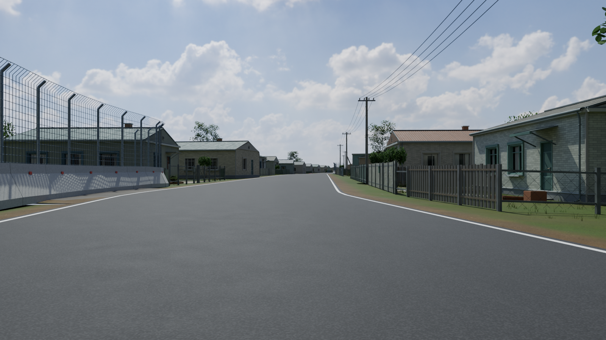
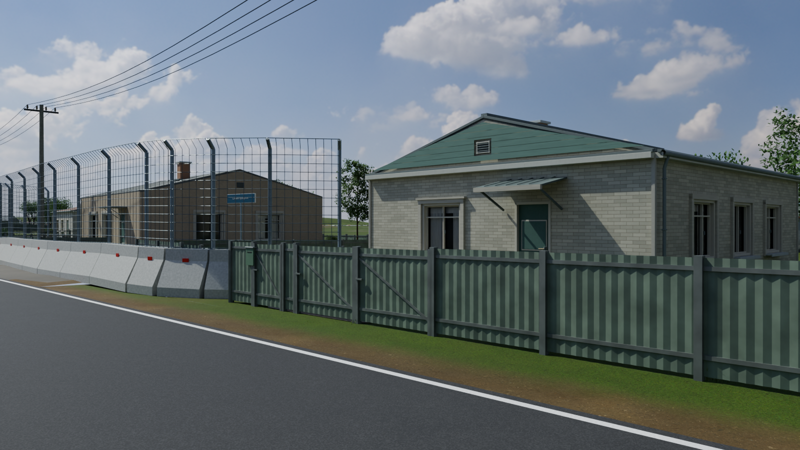
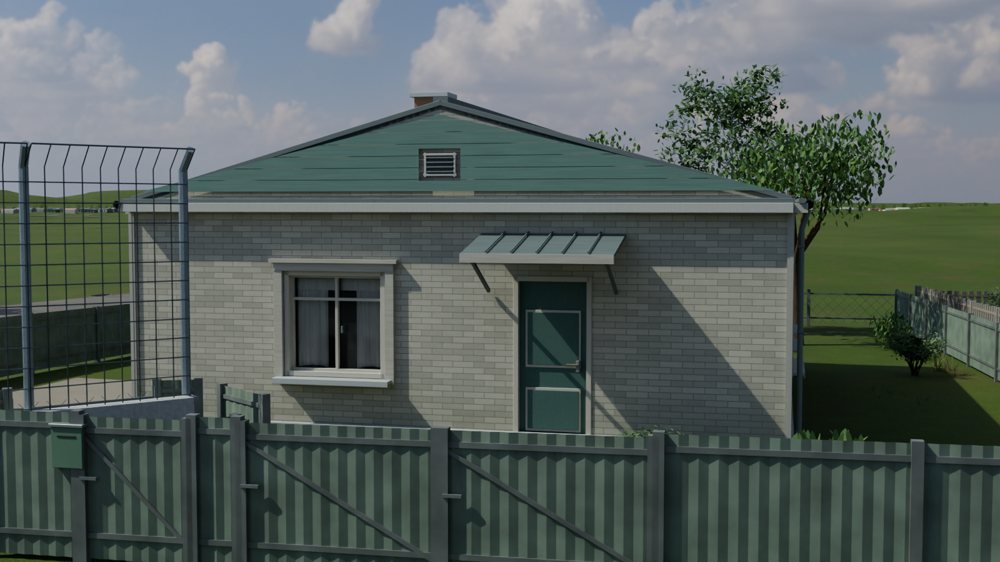
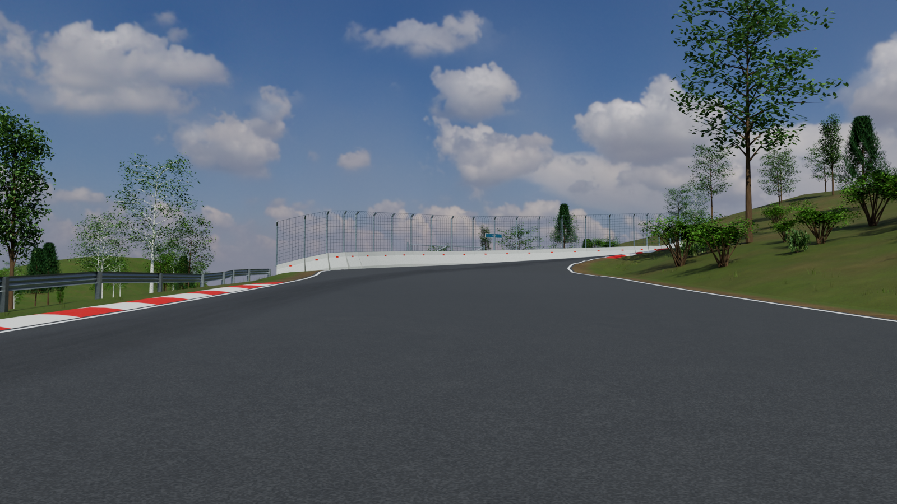
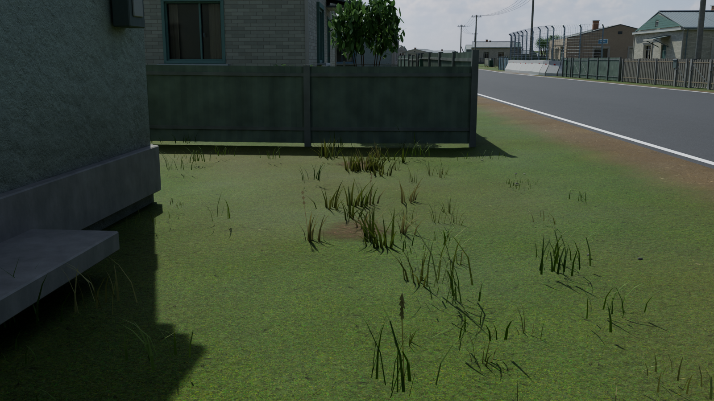
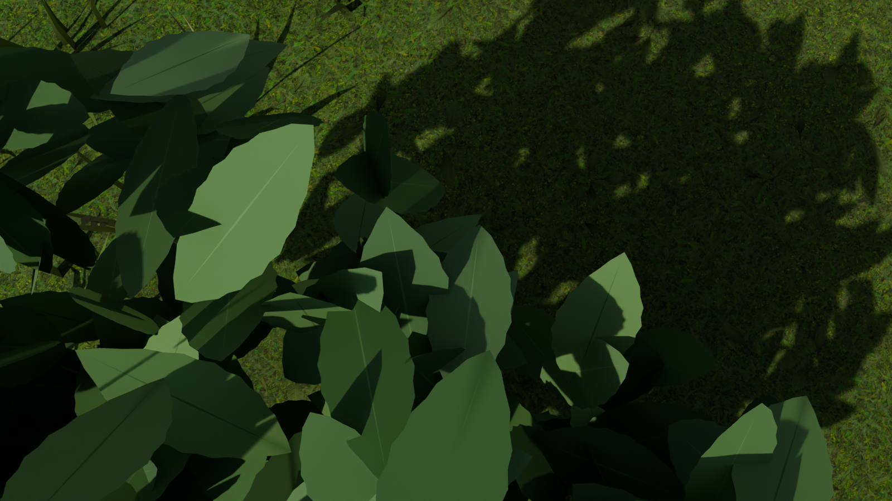
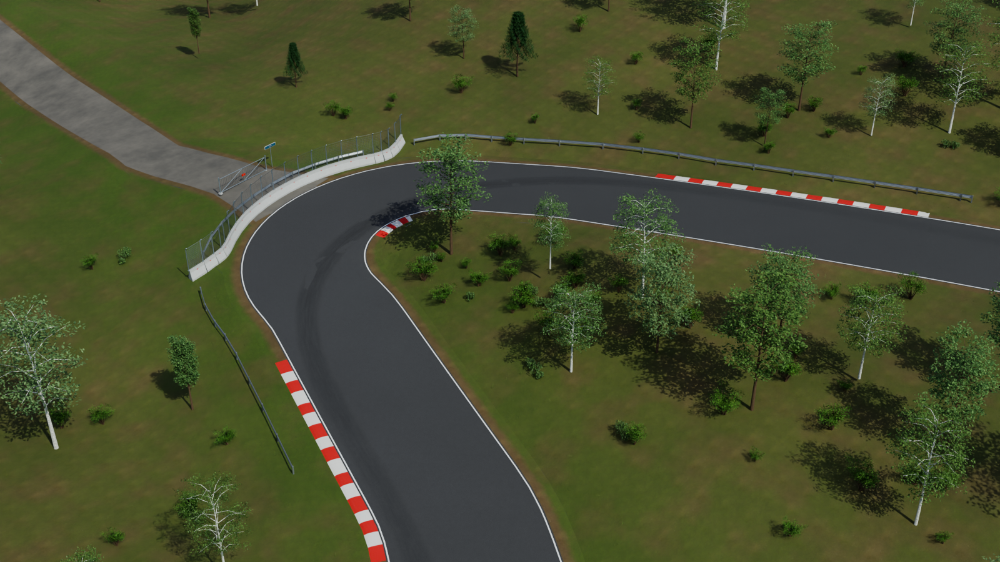
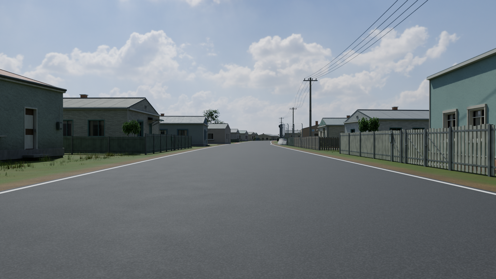
Шесть основных и пять дополнительных исходных видов. Дополнительный водительский ракурс 3985 м создан для этого сравнения и снят также в неизменной v16. Камеры, разрешение, число сэмплов, seed, цветовое преобразование и экспозиция проверены по manifest.
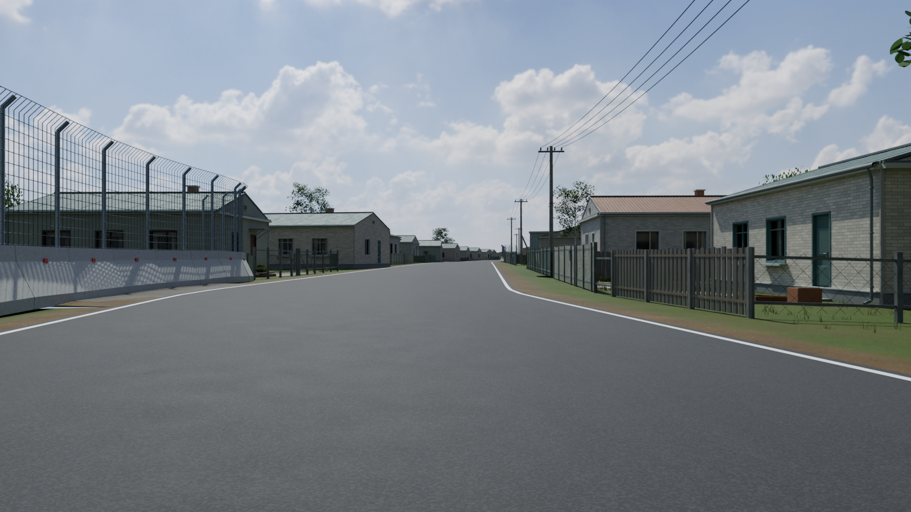
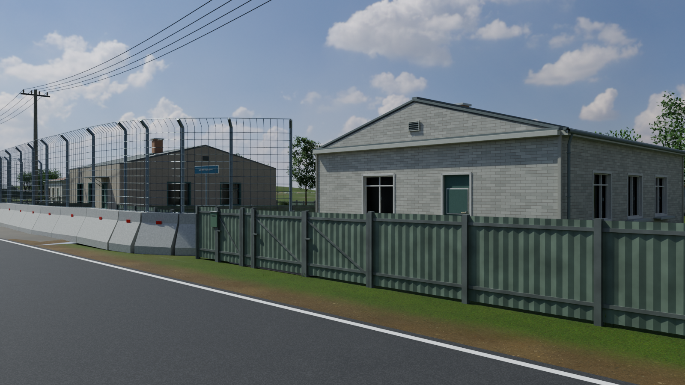
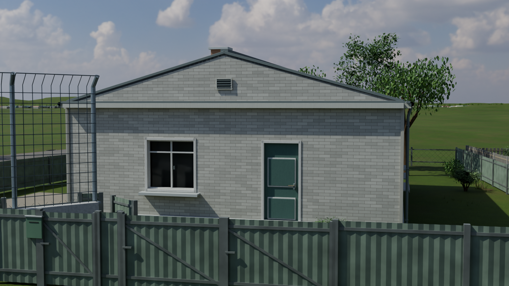
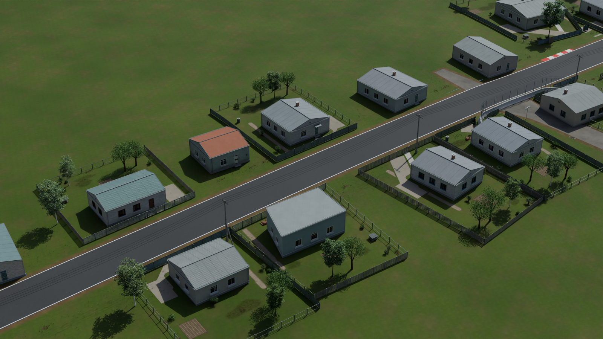
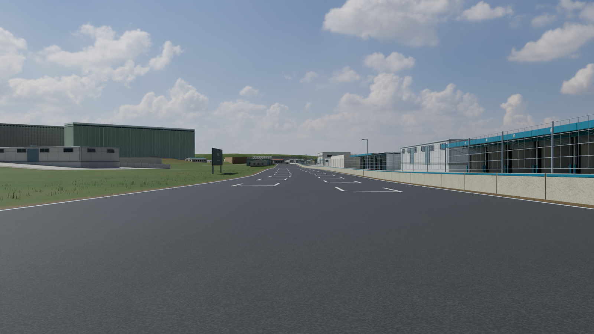
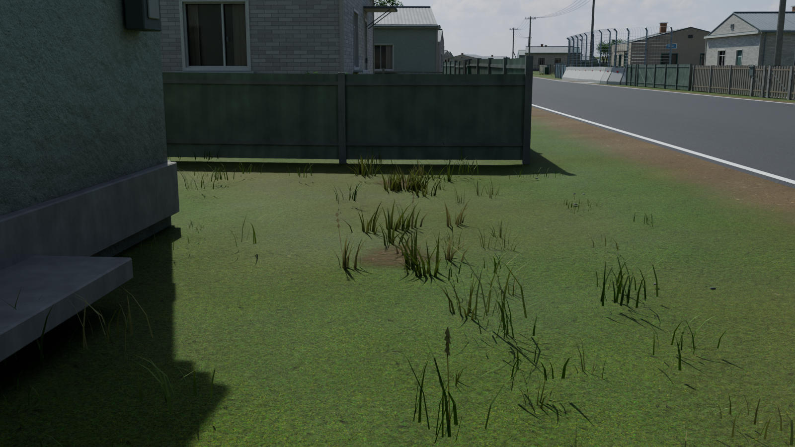
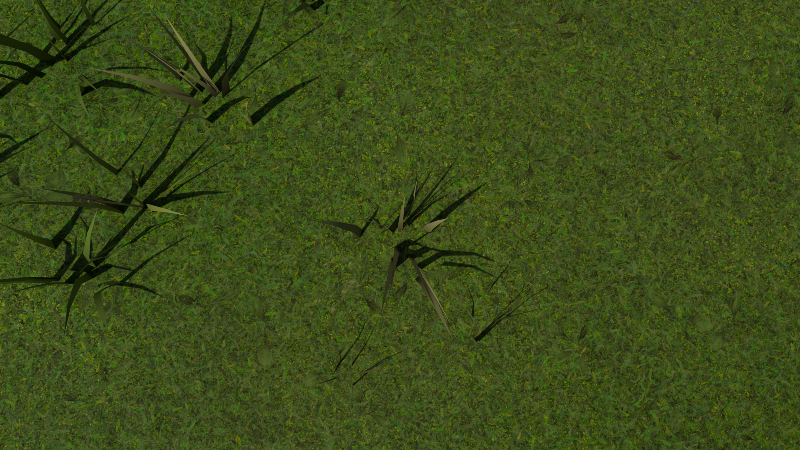
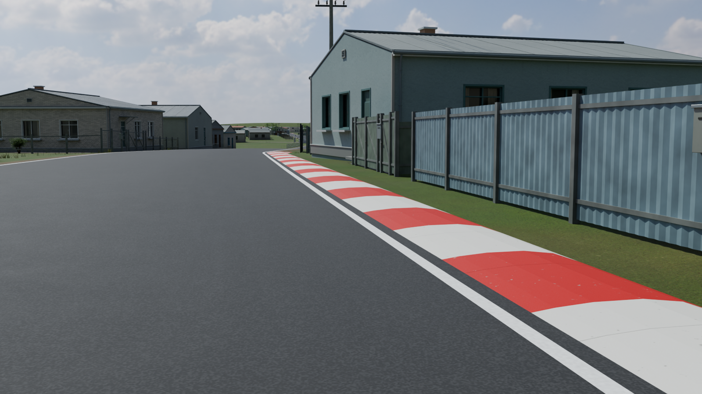
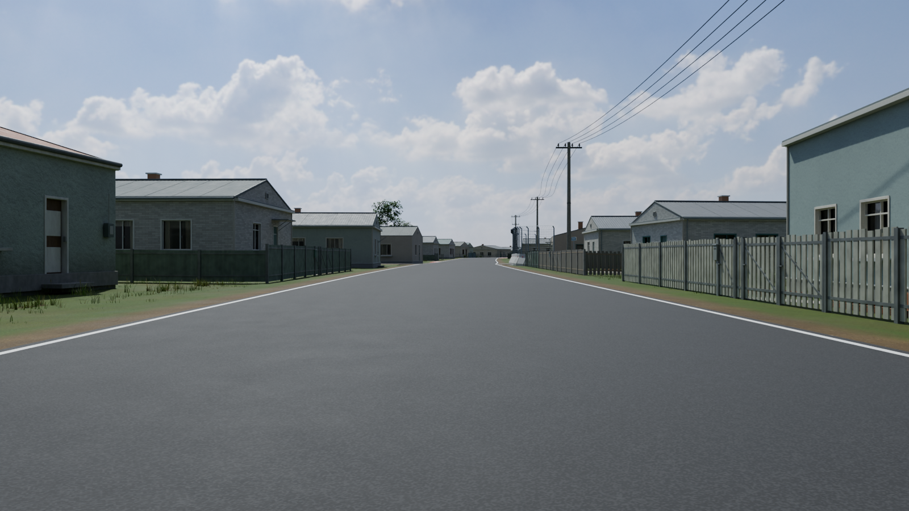
Адресная точность новой отделки фасадов не подтверждена. Подробные ограничения и результаты просмотра — в документации выпуска.